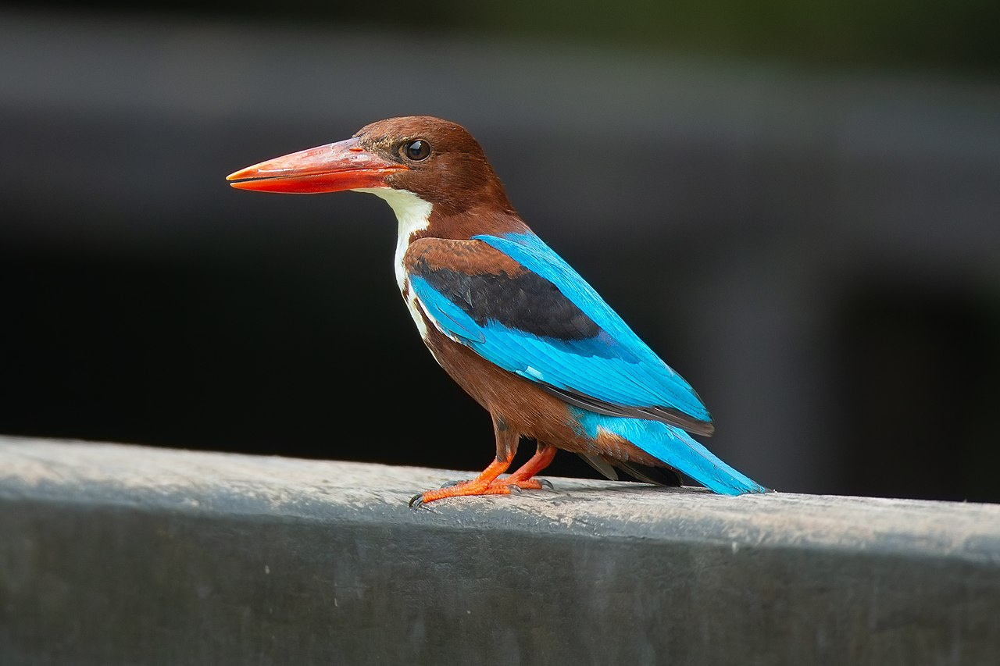

|
SHIKRAThe shikra (Accipiter badius) is a small bird of prey in the family Accipitridae found widely distributed in Asia and Africa where it is also called the little banded goshawk. The African forms may represent a separate species but have usually been considered as subspecies of the shikra. The shikra is very similar in appearance to other sparrowhawk species including the Chinese goshawk and Eurasian sparrowhawk. They have a sharp two note call and have the typical flap and glide flight. Their calls are imitated by drongos and the common hawk-cuckoo resembles it in plumage. |
|  |
WHITE-THROATED KINGFISHERThe white-throated kingfisher (Halcyon smyrnensis) also known as the white-breasted kingfisher is a tree kingfisher, widely distributed in Asia from the Sinai east through the Indian subcontinent to the Philippines. This kingfisher is a resident over much of its range, although some populations may make short distance movements. It can often be found well away from water where it feeds on a wide range of prey that includes small reptiles, amphibians, crabs, small rodents and even birds. During the breeding season they call loudly in the mornings from prominent perches including the tops of buildings in urban areas or on wires. |
SCALY-BREASTED MUNIAThe scaly-breasted munia or spotted munia (Lonchura punctulata), known in the pet trade as nutmeg mannikin or spice finch, is a sparrow-sized estrildid finch native to tropical Asia. A species of the genus Lonchura, it was formally described and named by Carl Linnaeus in 1758. Its name is based on the distinct scale-like feather markings on the breast and belly. The adult is brown above and has a dark conical bill. The species has 11 subspecies across their range and differ slightly in size and colour. |
|

|
ASHY PRINIAThe ashy prinia or ashy wren-warbler (Prinia socialis) is a small warbler in the family Cisticolidae.This prinia is a resident breeder in the Indian Subcontinent, ranging across most of India, Nepal, Bangladesh, Bhutan, Sri Lanka and western Myanmar. It is a common bird in urban gardens and farmland in many parts of India and its small size, distinctive colours and upright tail make it easy to identify. The northern populations have a rufous rump and back and have a distinct breeding and non-breeding plumage while other populations lack such variation. |